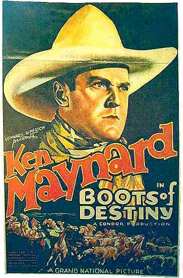

Saturday, February the 3rd, 2007
back to: title, date or indexes
Hooting Yard crashes in to 2007 a month late and with a new format. The old pages—which of course you can still visit—had a certain ramshackle charm, but I've decided to use this standard blog format for a number of reasons. Better indexing, for one thing, and we all need indexes. Also I hope that readers will take full advantage of the Comments feature and spout their own twaddle to complement my own. Onwards and upwards! Here, for your delectation, is a picture sent to me by that scalliwag Max Décharné.
